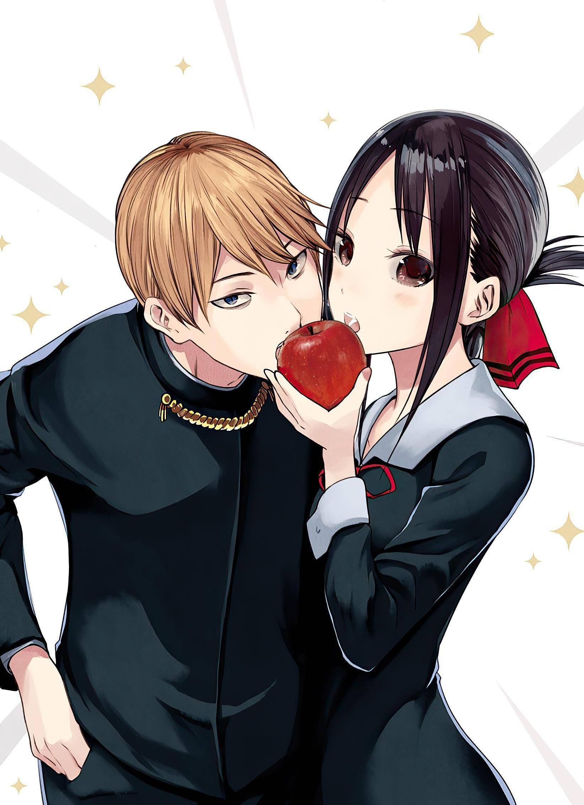

El manga Kaguya-sama: Love is War está cerca de finalizar
Una filtración a través de Baidu informó que el manga escrito e ilustrado por Aka Akasaka, Kaguya-sama: Love is War (Kaguya-sama wa Kokurasetai: Tensai-tachi no Renai Zunousen), finalizará dentro de catorce capítulos. La filtración proviene de la próxima edición de la revista Weekly Young Jump, en donde se publicará el capítulo 268, el séptimo del vigésimo séptimo volumen recopilatorio. Así, considerando que cada volumen tiene en promedio diez capítulos, se infiere que la obra terminará con un total de veintiocho volúmenes.
Por otra parte, Akasaka comenzó la publicación del manga en la revista Miracle Jump de la editorial Shueisha en mayo de 2015, y la mudó a la revista Weekly Young Jump en 2016. La editorial publicó el vigésimo quinto volumen recopilatorio en marzo de 2022, seguido del vigésimo sexto en junio de 2022 en Japón.
Además de varios mangas spin-off, la obra también inspiró una adaptación animada de doce episodios producida por los estudios A-1 Pictures, bajo la dirección de Shinichi Omata y guiones escritos por Yasuhiro Nakanishi, estrenada en enero de 2019. Una segunda temporada de doce episodios se estrenó en abril de 2020, y una tercera temporada de doce episodios se estrenó en abril de 2022.
Sinopsis de Kaguya-sama: Love is War
En la renombrada Academia Shuchiin, Miyuki Shirogane y Kaguya Shinomiya son los principales representantes del cuerpo estudiantil. Calificada como la mejor estudiante de la nación y respetada tanto por sus compañeros como por sus mentores, Miyuki se desempeña como presidenta del consejo estudiantil. Junto a él, la vicepresidenta Kaguya, la hija mayor de la rica familia Shinomiya, sobresale en todos los campos imaginables. Son la envidia de todo el alumnado, considerados la pareja perfecta. Sin embargo, a pesar de que ambos ya han desarrollado sentimientos por el otro, ninguno está dispuesto a admitirlos. El primero en confesar pierde, será menospreciado y considerado el menor. ¡Con su honor y orgullo en juego, Miyuki y Kaguya están igualmente decididos a ser los que salgan victoriosos en el campo de batalla del amor!